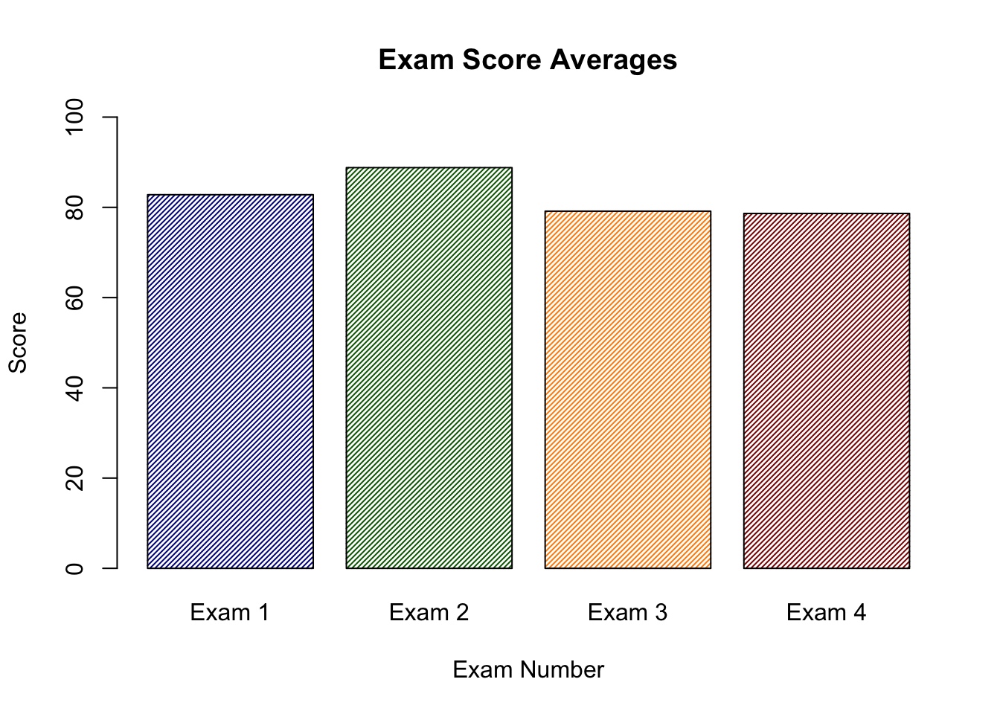

When I first started out with R, I only ever used the base plotting system. This was primarily because once I saw an example of a plot made with ggplot I was a little bit scared.
After awhile I realized that ggplot was the way to go when it came to graphics. The goal of this is to hopefully assuage you to do the same!
First, we will generate some data. I teach so we will use students and scores on a test and then look at how the students performed.
Some of my colleagues use a 4 test grading scheme where each test is worth 25%. Let’s create a sample dataset with a class of 40 students and varying scores for each student as well as an average for each student.
Let’s make a plot of the average score on each exam using the base plotting system.
# Get the means of each column (exam)test_means <-colMeans(test_data)# Only use the first four examstest_means <- test_means[1:4]Exam_1m=mean(test_data$Exam_1)Exam_2m=mean(test_data$Exam_2)barplot(c(test_means),names.arg =c("Exam 1","Exam 2","Exam 3","Exam 4"),col=c("darkblue","darkgreen","darkorange","darkred"),density =40,ylim =c(0,100),xlab="Exam Number",ylab="Score",main="Exam Score Averages")

This does not look bad, but we could probably do better with ggplot.
The first thing to note is the syntax that ggplot uses.
You will see here that each line is followed by a + which indicates that a new layer is being added. Let’s try this out using our dataframe. I will do it the way you will see it most places, and then afterwards only do it the shortened way:
# Use the means we created before and add two line numbersgg_test <-data.frame(ExamNum=c("Exam 1","Exam 2","Exam 3","Exam 4"),averages = test_means)# x-axis will be the test number, y will be the average # The color will change based on value of the averageggplot(data=gg_test,aes(x=ExamNum,y=averages,fill=averages))+# Tells R to plot the value associated with the x-axisgeom_bar(stat="identity")+# A nice theme theme_minimal()+# Specifies x and y axes labels and title for plotlabs(x="Exam Number",y="Score",title="Exam Score Averages") +# Removes legendtheme(legend.position ="none")+# Specify limits ylim(0,100) +# Adds values from the averages vector and vertically adjustsgeom_text(aes(label=averages,vjust=-.3)) +theme(axis.text.y =element_blank(),plot.title =element_text(hjust = .5, size =15,face ="bold") )
I know that there is a lot going on in the example, but it just kind of looks nice, right?
Let’s go back to the example and add some filtering. Let’s make a new column that determines whether or not a student passed or failed the test.
When we first made the dataset we included a fifth column, FinalGrade that represents the students overall grade. We will then make a series of statements that will determine what the letter grade is, and then plot the result!
We will be using the %>% or pipe operator to pass the contents of test_data into our arranging.
We will first use the mutate function which creates a new column based on the arguments you pass to it.
We will also be using case_when which acts as an ifelse statement but with multiple conditionals.
The basic structure is: case_when(variable=this~make it this)
# A tibble: 5 × 2
# Groups: LetterGrade [5]
LetterGrade n
<chr> <int>
1 A- 2
2 B 10
3 B+ 2
4 B- 14
5 C+ 12
Our students didn’t do particularly well, but that is to be expected when we control the range their grades can be in!
Next, we will graph the data using ggplot, but this time we will pass the dataframe directly into the plot and remove the x= and y= declarations
When we graph the results the letter grades will be backwards so we will need to use fct_rev to reverse them.
final_grade %>%# Place Grades on X axis and count on Y axis# Color based on Letter Gradeggplot(aes(fct_rev(LetterGrade),n,fill=LetterGrade)) +geom_bar(stat="identity") +theme_minimal(base_size=12) +labs(x="",y="Count",title="Letter Grade Frequency") +# Flip the axes for better readabilitycoord_flip() +# Remove the legend and the axis tickstheme(legend.position ="none",axis.ticks =element_blank()) +# Add the count to the barsgeom_text(aes(label=n,hjust=-.08)) +theme(axis.text.x =element_blank() )
I’m not entirely sure, but I think I’m just addicted to bar charts–but that’s my problem!
Scatterplots
When I was first learning R in graduate school the class was given a task to plot points but in different colors depending on what gender the points came from. In base plotting this requires the use of not only the plot function but also the points function. It is entirely doable, but ggplot just handles it better!
Let’s generate some data where we have hypothetical participants take an experiment where their reaction time is measured as well as their mood is measured.
Sex RT TestScore
1 M 605.93 84
2 F 689.31 65
3 F 646.58 89
4 M 1048.09 94
5 M 1040.51 89
6 F 879.03 66
7 F 1013.10 99
8 M 1059.67 62
9 M 801.06 74
10 M 847.41 81
11 F 711.60 70
12 M 782.91 67
13 M 848.91 76
14 F 790.75 79
15 M 638.69 79
16 F 793.54 73
17 F 999.04 61
18 M 844.59 93
19 F 928.91 93
20 F 672.04 77
21 M 1088.58 80
22 F 743.70 63
23 M 792.60 75
24 F 731.62 89
25 F 763.13 79
26 F 857.86 72
27 M 749.54 85
28 F 460.20 92
29 M 979.14 71
30 M 737.36 86
31 F 1082.14 68
32 F 581.81 92
33 M 859.77 67
34 F 731.41 63
35 M 968.88 85
36 M 856.57 89
37 M 491.09 85
38 M 732.46 73
39 M 1064.67 82
40 M 574.58 82
41 F 900.58 68
42 M 950.06 97
43 F 947.17 62
44 F 1069.40 61
45 M 790.72 100
46 F 395.36 70
47 M 1000.95 80
48 M 909.09 85
49 F 601.77 94
50 F 789.96 94
51 M 817.70 72
52 M 766.81 79
53 M 854.39 56
54 F 851.28 53
55 F 651.63 76
56 M 692.04 87
57 F 919.99 47
58 F 662.43 84
59 M 526.22 68
60 M 674.96 85
61 M 881.46 78
62 F 626.36 46
63 M 762.93 85
64 F 836.21 51
65 M 906.51 50
66 F 639.73 41
67 M 750.02 84
68 F 549.14 48
69 M 1135.27 68
70 M 767.14 58
71 M 762.06 40
72 F 676.49 71
73 F 600.69 66
74 F 1274.71 71
75 F 778.11 85
76 F 896.18 86
77 F 674.62 86
78 M 884.33 68
79 M 705.61 84
80 F 650.11 63
81 F 598.24 67
82 M 1027.59 50
83 F 844.12 74
84 M 800.03 48
85 M 800.68 68
86 M 925.19 42
87 M 676.45 63
88 F 753.85 67
89 M 536.27 41
90 M 809.01 57
91 M 871.10 66
92 M 670.90 85
93 F 931.06 90
94 F 792.74 44
95 M 641.42 59
96 F 628.22 79
97 M 712.49 57
98 F 805.42 82
99 M 574.78 42
100 F 723.07 46
Plot Sex against RT and have the colors be linked to the Sex of the participant (point).
scat_df %>%ggplot(aes(TestScore,RT,color=Sex)) +geom_point(aes(shape=Sex)) +theme_minimal() +labs(x="Test Score",y="RT(ms)",title="RT and Test Scores")
Clearly no real pattern is emerging from the data, but we can see a clear distinction between the different points.
Heatmaps
One of my favorite geom’s to use is geom_tile which creates a heatmap style plot.
Let’s create a fake TV show with fake episode titles and fake episode ratings.
Season Episode Title Ratings
1 S1 1 The Visit Product 8
2 S1 2 The Dinner Pretty 9
3 S1 3 The Ago Through 8
4 S1 4 The Propose Wash 8
5 S1 5 The Do Post 9
6 S1 6 The University Wee 8
7 S1 7 The Shoot Respect 8
8 S1 8 The Road Stop 8
9 S1 9 The Evidence Hear 8
10 S1 10 The Recommend Cook 9
11 S1 11 The Kill Bed 9
12 S1 12 The Mrs Claim 8
13 S2 1 The Compute Buy 9
14 S2 2 The Flat Class 8
15 S2 3 The Depend Admit 9
16 S2 4 The Staff Sister 8
17 S2 5 The Private Christmas 9
18 S2 6 The Serious Total 8
19 S2 7 The Morning Tie 9
20 S2 8 The Around After 8
21 S2 9 The Inform Fish 8
22 S2 10 The Germany Money 9
23 S2 11 The Manage Weigh 8
24 S2 12 The Whether Square 9
25 S3 1 The Between Dinner 9
26 S3 2 The Eleven Quid 9
27 S3 3 The Train Until 9
28 S3 4 The Word Hour 8
29 S3 5 The Look Small 8
30 S3 6 The Middle Page 9
31 S3 7 The Apart Wide 8
32 S3 8 The Million Strategy 8
33 S3 9 The Choose Single 8
34 S3 10 The Identify Centre 8
35 S3 11 The Succeed Mind 8
36 S3 12 The Ought Story 8
37 S4 1 The Eat All 9
38 S4 2 The Probable Although 8
39 S4 3 The Allow Feel 8
40 S4 4 The Thou Black 8
41 S4 5 The Hullo Stick 8
42 S4 6 The Unite Light 9
43 S4 7 The Village Help 8
44 S4 8 The Sheet Arrange 8
45 S4 9 The Period Visit 8
46 S4 10 The Party Cat 8
47 S4 11 The Approach Provide 8
48 S4 12 The Clothe Out 9
49 S5 1 The Laugh Govern 8
50 S5 2 The Situate Hope 8
51 S5 3 The Draw Actual 8
52 S5 4 The Various True 8
53 S5 5 The Pull Strike 8
54 S5 6 The Jump Summer 9
55 S5 7 The Already Back 8
56 S5 8 The Begin Very 9
57 S5 9 The Electric To 8
58 S5 10 The America Two 8
59 S5 11 The Expect Nature 8
60 S5 12 The Match Ask 8
61 S6 1 The Secure Mark 8
62 S6 2 The Jesus Sorry 7
63 S6 3 The Nature Order 8
64 S6 4 The Process Put 8
65 S6 5 The Kitchen Left 8
66 S6 6 The Park Rest 7
67 S6 7 The Actual Cake 7
68 S6 8 The However Break 8
69 S6 9 The Point Five 8
70 S6 10 The Excuse Eye 7
71 S6 11 The Section Into 7
72 S6 12 The Comment Paint 6
Firstly, I want to take a moment to see how truly excellent some of the episode titles are:
title_samp <-sample(Dave_TV$Title,10)title_samp
[1] "The However Break" "The University Wee" "The Ago Through"
[4] "The Do Post" "The Compute Buy" "The Word Hour"
[7] "The Allow Feel" "The Whether Square" "The Depend Admit"
[10] "The Around After"
Anyways, now that our data is in the correct format we can plot it.